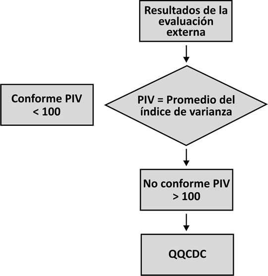
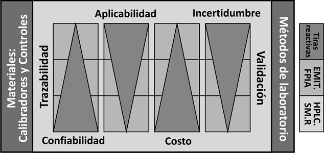

Mejorar la calidad al nivel Six Sigma integrando los resultados de la evaluación externa con los del programa interno aplicando el método QQCDC
Este artículo puede ser consultado en versión completa en:
http://www.medigraphic.com/patologiaclinica
Arturo M. Terrés-Speziale
Director de JAR Quality, S.A. de C.V.
Resumen
Antecedentes: La Norma ISO 15189:2007 tiene la meta de lograr la mejora continua en la Gestión de la Calidad y en la Competencia Técnica para que los laboratorios informen resultados médicamente relevantes y de esta manera se propicie que las decisiones médicas se puedan basar en evidencia sólida.
Conforme a ISO, cada unidad debe contar con un Profesional del Laboratorio Clínico que sea el responsable de:
1) Vigilar que el laboratorio aplique un programa interno de control de calidad «PICC».
2) Participe en un Esquema de Evaluación Externa de la Calidad «EEEC» que esté reconocido por cumplir los requisitos de las normas internacionales.
3) Acredite la evaluación de cada una de las pruebas incluidas.
4) Desarrolle una metodología bien documentada para solucionar la problemática de aquellos análisis en los que la calidad no sea satisfactoria.
La Norma ILAC G13:08/2007 fue creada por la Cooperación Internacional Para la Acreditación de los Laboratorios para regular los Programas de Ensayos de Aptitud, en ella se establece que es responsabilidad de los Proveedores de los Esquemas de Evaluación Externa de la Calidad dar asesoría a los laboratorios participantes, y que es responsabilidad de los Laboratorios corregir de inmediato todos los resultados no conformes.
Objetivo: Describir un método práctico y bien sistematizado a través del cual se pueda alcanzar una confiabilidad analítica «Cero Errores» al nivel Six Sigma partiendo de la detección de los resultados no conformes que se presenten durante la participación en los Programas de Aptitud que se llevan a cabo en los Esquemas de Evaluación Externa de la Calidad.
Material y método: El método que se denomina QQCDC permite identificar el Qué, Por qué, Para Qué, Quién, Cuándo, Dónde, Cómo y Con Qué se debe trabajar en el Laboratorio Clínico para que los resultados emitidos sean confiables y oportunos llevándolos hasta el nivel Six Sigma. Consiste de una serie de pasos secuenciales bien estructurados en los que la meta es calcular el Error Total antes de aplicar medidas correctivas y preventivas, partiendo de los resultados no conformes que se obtienen en el EEEC y de la evaluación de la imprecisión medida en el Programa Interno de Control de Calidad. La verificación de los resultados obtenidos durante cuando menos seis ciclos previos se realiza aplicando el cálculo del coeficiente de correlación y la regresión lineal, para que finalmente se recalibren las pruebas y se verifiquen los resultados empleando controles de Tercera Opinión.
Resultados: Las medidas que se recomiendan para mejorar el desempeño abarcan todo el proceso analítico, incluyendo:
1) Seguir fielmente las instrucciones para el manejo y la reconstitución de los controles, vigilando la exactitud del volumen de dilución, de las temperaturas y de los tiempos de incubación.
2) Separar y conservar una alícuota en óptimas condiciones para verificar los resultados que resulten no conformes.
3) Revisar el mantenimiento preventivo y correctivo del analizador incluyendo la calidad del agua y la estabilidad de la energía eléctrica.
4) Revisar las unidades de reporte que se utilizan en el EEEC y estandarizar con las del PICC.
5) Evaluar todos los datos que hayan obtenido previamente en cuando menos seis rondas previas comparando los valores reportados por el laboratorio con los valores asignados en cada envío para que sobre esta base se realice el cálculo de la regresión lineal y del coeficiente de correlación incluyendo por supuesto la pendiente y la ordenada en el origen.
6) Recalibrar la prueba empleando calibradores múltiples en pares y considerando además los datos de la curva del EEEC.
7) Confirmar la exactitud utilizando «Controles de Tercera Opinión» de excelente calidad independientes a los del fabricante del sistema y con valores asignados para todos los métodos en conjunto, además de contar con información específica para cada uno de ellos. Es indispensable que las medidas correctivas y preventivas se apliquen inmediatamente cuando se encuentre un resultado no conforme, o al encontrar dos resultados en nivel de alerta aun cuando no sean consecutivos. Es importante recordar que la precisión depende del buen mantenimiento del equipo y se verifica en el Programa Interno de Control de Calidad, mientras que la exactitud depende de una buena calibración y se verifica en el Esquema de Evaluación Externa de la Calidad. La resultante de la Precisión y de la Exactitud se deben documentar en el PICC y en el EEEC para que sobre la base de ambas se calcule el Error Total.
Conclusión: La medicina basada en evidencia depende en gran medida de la confiabilidad y la relevancia de los resultados del Laboratorio Clínico, la cual debe estar bajo el control de un programa interno con el apoyo de los proveedores de ensayos de aptitud, aplicando métodos y procedimientos científicamente válidos.
Introducción
El proceso de acreditación del laboratorio clínico es una intervención externa que se debe llevar a cabo entre Profesionales de Laboratorio con el fin de demostrar la competencia técnica y la capacidad de proporcionar un servicio de alta calidad, que sea capaz de generar resultados médicamente relevantes basados en evidencias que contribuyan positivamente con las decisiones médicas.1
Para ello es necesario que el laboratorio demuestre con evidencia sólida y bien documentada la existencia de cuatro elementos fundamentales:
• GESTIÓN DE CALIDAD: Un Manual de Calidad en el que se describa en detalle un Sistema de Gestión de Calidad que incluya la Política de Calidad, además de la Estructura, los Procesos y los Resultados.
• COMPETENCIA TÉCNICA: Un Programa Integral de Control en el que se cumplan los requisitos específicos en todas las etapas del proceso analítico, incluyendo desde la indicación de estudios hasta el reporte y la interpretación de resultados.
• ENSAYOS DE APTITUD: Participación en un Esquema de Evaluación Externa que esté reconocido por cumplir estándares y requisitos de Normas Internacionales ante un organismo o entidad reconocido por la Organización Internacional de Estándares.
• AUDITORÍAS: Una serie de evaluaciones expertas calificadas por y entre pares, las cuales deben ser planeadas, organizadas, supervisadas y controladas a manera de auditorías internas y externas por una organización de acreditación establecida y reconocida dentro y fuera del país.
Las diferencias fundamentales entre una Certificación ISO 9000 y una Acreditación ISO 15189 consisten fundamentalmente en que la primera se basa en demostrar la documentación e implantación de un Sistema de Gestión de Calidad que puede ser llevada a cabo en cualquier tipo de empresa de productos o servicios por cualquier tipo de profesionales, incluyendo legos en la materia, mientras que en la segunda, es decir la Acreditación 15189, además de demostrar el alcance y objetivo de ISO 9000 se debe demostrar la Competencia Técnica que es la capacidad de generar resultados confiables, oportunos y médicamente relevantes ante «pares» por lo que en el grupo auditor se debe incluir a cuando menos un Profesional de Laboratorio con capacitación adecuada bien documentada para llevar a cabo una auditoría externa.
Control de calidad
De acuerdo a la Norma ISO/IEC 15189:2003. Laboratorios Clínicos - Requisitos Particulares para la Calidad y la Competencia:
5.6.1 El laboratorio debe diseñar sistemas de control de calidad internos que verifiquen que la calidad deseada de los resultados sea alcanzada. Es importante que el sistema de control provea a los miembros del personal con información clara y fácilmente entendible sobre la cual se basen las decisiones técnicas y médicas.
5.6.2 El laboratorio debe determinar la incertidumbre de los resultados, cuando sea pertinente y posible. Los componentes de la incertidumbre, que sean de importancia deben ser tomados en cuenta. Fuentes que contribuyen a la incertidumbre pueden incluir toma de la muestra, preparación de la muestra, selección de alícuota de la muestra, calibradores, materiales de referencia, cantidades de entrada, equipo utilizado, condiciones ambientales, condición de la muestra y cambios de operador.
5.6.3 Debe ser diseñado y realizado un programa de calibración de sistemas de medición y de comprobación de la veracidad para asegurar que los resultados sean trazables al Sistema Internacional de Unidades (SI) o por referencia a una constante natural u otra referencia indicada. Cuando esto no sea posible o pertinente, deben aplicarse otros medios para proporcionar confianza en los resultados, incluyendo, pero sin estar limitado a lo siguiente:
a) Participación en un programa adecuado de comparación interlaboratorios.
b) Uso de materiales de referencia adecuados, certificados para indicar la caracterización del material.
c) Examen o calibración por otro procedimiento.
d) Estándares o métodos de consenso que estén claramente establecidos, especificados, caracterizados y acordados por todas las partes involucradas.
e) Documentación de las declaraciones relacionadas con los reactivos, procedimientos o sistemas de examen, cuando la trazabilidad sea proporcionada por el proveedor o fabricante.
5.6.4 El laboratorio debe participar en comparaciones interlaboratorios, tales como las que se realizan bajo Esquemas de Evaluación Externa de la Calidad. La Gerencia del Laboratorio debe dar seguimiento a los resultados de los ensayos de aptitud y participar en la implementación de acciones correctivas cuando los criterios de control no se cumplen. Los programas de comparación interlaboratorios deben estar en completo acuerdo con las Normas ISO/IEC 43-1 e ILAC G13:08/2007.2,3 Los Esquemas de Evaluación Externa de la Calidad deberán, tanto como sea posible, proporcionar retos clínicamente relevantes que imiten muestras de pacientes y que permitan la verificación de todo el proceso analítico, incluyendo los procedimientos pre y postexamen relacionados a la indicación de pruebas e interpretación de resultados.
5.6.5 Cuando no esté disponible un programa formal de comparación interlaboratorios, para una prueba en particular, el laboratorio debe desarrollar un mecanismo para determinar la aceptabilidad de los procedimientos que no sean evaluados de otra manera. Siempre que sea posible, este mecanismo debe utilizar materiales de origen externo que impliquen un reto al laboratorio, tales como el intercambio de muestras con otros laboratorios. La gerencia del laboratorio debe dar seguimiento a los resultados de este mecanismo de comparación interlaboratorios y participar en la implementación y registro de acciones correctivas.
5.6.6 Para aquellos exámenes que se ejecuten empleando diferentes procedimientos o equipo o en diferentes sitios o todos éstos, debe definirse un mecanismo para verificar que los resultados son comparables en todos los intervalos clínicamente apropiados. Tal verificación debe ejecutarse a periodos de tiempo definidos y apropiados a las características del procedimiento o instrumento.
5.6.7 El laboratorio debe documentar, registrar, y cuando sea apropiado actuar en forma expedita sobre los resultados de estas comparaciones. Deben tomarse acciones sobre los problemas o deficiencias que se identifiquen y deben mantener los registros de las acciones aplicadas.
La Norma ILAC G13:08/2007 fue creada por la Cooperación Internacional Para la Acreditación de los Laboratorios para regular los Programas de Ensayos de Aptitud, en ella se establece que:
• Es responsabilidad de los Proveedores de los Esquemas de Evaluación Externa de la Calidad dar asesoría a los laboratorios participantes.
• Es responsabilidad de los Laboratorios corregir de inmediato todos los resultados no conformes.
Objetivo
Describir un método práctico y bien sistematizado, a través del cual se pueda alcanzar una confiabilidad analítica «Cero Errores» al nivel Six Sigma partiendo de la detección de los resultados no conformes que se presenten durante la participación en los Programas de Aptitud que se llevan a cabo en la Evaluación Externa de la Calidad.
Material y métodos
El método que se denomina QQCDC permite identificar el Qué, Por qué, Para Qué, Quién, Cuándo, Dónde, Cómo y Con Qué se debe trabajar en el Laboratorio Clínico para que los resultados emitidos sean confiables y oportunos, llevándolos hasta el nivel Six Sigma. Consiste de una serie de pasos secuenciales bien estructurados en los que la meta es calcular el Error Total antes de aplicar medidas correctivas y preventivas, partiendo de los resultados no conformes que se obtienen en el EEEC y de la evaluación de la imprecisión medida en el Programa Interno de Control de Calidad. La verificación de los resultados obtenidos durante cuando menos seis ciclos previos se realiza aplicando el cálculo del coeficiente de correlación y la regresión lineal, para que finalmente se recalibren las pruebas y se verifiquen los resultados, empleando controles de Tercera Opinión.
Enfoque al método QQCDC
El método que se denomina QQCDC permite identificar el Qué, Por qué, Para Qué, Quién, Cuándo, Dónde, Cómo y Con Qué se debe trabajar en el Laboratorio Clínico para que los resultados emitidos sean confiables y oportunos, llevándolos hasta el nivel Six Sigma (figura 1 y cuadro I).

Figura 1. Algoritmo para la implantación del método QQCDC partiendo de los resultados del Esquema de Evaluación Externa de la Calidad.
Para el cumplimiento de las Normas Internacionales que regulan la calidad y competencia técnica de los Proveedores de Ensayos de Aptitud es indispensable que las organizaciones que brindan este servicio estén reconocidas por la Entidad Mexicana de Acreditación AC para garantizar que su Sistema de Gestión de Calidad, Políticas, Procedimientos y Competencia Técnica cumplen con los requisitos ILAC G13:08/2007, los cuales deben ser auditados en forma anual definiendo su alcance y vigencia de manera clara y documentada. El Catálogo de los Esquemas de Evaluación Externa de la Calidad debe describir los programas y pruebas que cubre y que estén reconocidas dentro de las disciplinas del Laboratorio Clínico, incluyendo las del Banco de Sangre, Anatomía Patológica, Citología, Biología Molecular, Genética, etc. La información detallada debe ser fácilmente consultable a través de publicaciones impresas, aunque en la actualidad se pueden difundir a través de Internet para facilitar su consulta en tiempo real. Por lo general los Programas de los Ensayos de Aptitud en el Laboratorio Clínico constan de 12 ciclos mensuales, los cuales se llevan a cabo conforme a un programa predeterminado. Cada laboratorio puede elegir uno, varios o todos los programas, dependiendo de sus necesidades individuales. El Proveedor de Ensayos de Aptitud debe proporcionar Tutoriales sobre el Proceso Analítico y el Método Estadístico que emplea para calificar resultados para que los participantes los puedan accesar fácilmente para su consulta y estudio (cuadros II a IV) . Al laboratorio también se le deben proporcionar Instructivos para el Manejo de Controles, además de Formatos de Reporte, para que puedan ser utilizados como hojas de trabajo interno e incluso para que puedan ser enviados al coordinador del programa para la evaluación de los resultados. Actualmente, dado el desarrollo tecnológico de la informática, la forma más eficiente de reportar los resultados es a través de los buzones que cada laboratorio tiene en los portales que se denominan websites y que sólo se pueden accesar mediante claves y contraseñas confidenciales.
Cuadro I. Cuadro sinóptico del proceso QQCDC para la mejora de la calidad de los resultados analíticos al nivel Six Sigma.
|
Qué |
Nombre del proceso |
Mejora de la calidad analítica sobre la base de resultados previos obtenidos en el Esquema de Evaluación Externa de la Calidad. |
|
Por qué |
Justificación |
Medicina basada en evidencia: Cada unidad debe contar con un profesional del laboratorio clínico que sea el responsable de: 1) Vigilar que el laboratorio aplique un programa interno de control de calidad «PICC». 2) Participe en un Esquema de Evaluación Externa de la Calidad «EEEC» que esté reconocido por cumplir los requisitos de las normas internacionales. 3) Acredite la evaluación de cada una de las pruebas incluidas. 4) Desarrolle una metodología bien documentada para solucionar la problemática de aquellos análisis en los que la calidad no sea satisfactoria. |
|
Para qué |
Metas y objetivos |
1. Relevancia médica: Lograr que el laboratorio informe resultados médicamente confiables y oportunos para que las decisiones médicas se tomen sobre la base de una evidencia sólida. 2. Brindar a los usuarios del laboratorio el máximo beneficio con el menor riesgo y el mejor costo. Llevando los resultados analíticos al nivel Six Sigma = Cero errores. |
|
Quién |
Responsables |
1. Es responsabilidad de los laboratorios contar con un PICC efectivo en el que se detecten y corrijan de inmediato todos los resultados no conformes. 2. Es responsabilidad de los proveedores de los Esquemas de Evaluación Externa de la Calidad proporcionar programas confiables y oportunos, además de dar asesoría, asistencia técnica y capacitación a los laboratorios participantes. |
|
Cuándo |
Etapa postexamen |
El proceso se inicia a partir de que se obtienen resultados no conformes en el EEEC. |
|
Dónde |
Ubicación |
Asesoría, Investigación y Desarrollo proporciona información gratuita a través de www.aidmx.com El correo electrónico en el que se puede solicitar apoyo es asesor@aidmx.com |
|
Cómo |
Descripción del proceso |
1. La Precisión depende del buen mantenimiento del equipo y se verifica en el programa interno de control de calidad. 2. La Exactitud depende de una buena calibración y se verifica en el esquema de evaluación externa de la calidad. 3. El error total (ET) es la resultante de la precisión y de la exactitud que se deben documentar en el PICC y en el EEEC para poder calcular el ET verdadero. |
|
Con qué |
Herramientas de mejora |
1. Software: QC Process para la verificación de la precisión y exactitud se encuentran disponibles como Freeware en www.qualitat.cc 2. Controles independientes de tercera opinión con valores asignados por mesurando y método específico. |
Cuadro II. Cálculo del error total y del índice de varianza sobre la base de la meta analítica al nivel Aspen establecidas sobre la base de la variabilidad biológica determinada por los límites de referencia de la hemoglobina de la BH en g/dL con un Bias del 25% y un coeficiente de variación relativo de 0.5.
|
A |
Hemoglobina |
Nombre del analito |
|
B |
g/dL |
Unidad de medición |
|
C |
17.30 |
Resultado del laboratorio |
|
D |
13.50 |
Límite de referencia mínimo (-2DS) |
|
E |
18.00 |
Límite de referencia máximo (+2DS) |
|
F |
15.75 |
Mediana de los límites de referencia (D + E)/2 |
|
G |
4.50 |
Rango = (E - D) |
|
H |
1.1 |
Tonks: Variabilidad biológica grupal = [cuartil] = (G/4) |
|
I |
7.1% |
CVB%: Coeficiente de variación biológico = (H/F) % |
|
J |
13.6 |
Valor esperado mínimo = K - Ñ (Nivel de incertidumbre Six Sigma del valor asignado) |
|
K |
13.8 |
Valor esperado = media de los participantes en el grupo de trabajo método específico |
|
L |
14.0 |
Valor esperado máximo = K + Ñ (Nivel de incertidumbre Six Sigma del valor asignado) |
|
M |
0.5 |
Meta analítica nivel Aspen: Expresado como desviación estándar |
|
N |
3.6% |
Meta analítica Aspen = Tonks CVB%/2 |
|
Ñ |
0.2 |
Meta analítica Six Sigma: Expresado como desviación estándar |
|
O |
1.2% |
Meta analítica Six Sigma = Tonks CVB%/6 |
|
P |
1.4 |
T Score del laboratorio = índice de desviación estándar biológico (C - F)/H |
|
Q |
-1.7 |
T Score del grupo control = índice de desviación estándar biológico (K - F)/H |
|
R |
0.5 |
Precisión: Coeficiente de variación relativo (Aspen/Biológico) = (N/1) |
|
S |
25% |
BIAS% = C/K-1 |
|
T |
3.1 |
Score = índice de desviación estándar = P - Q |
|
U |
1.6 |
ET = Error total = Raíz ((R)2 x(T)2)) |
|
V |
155 |
IV = Índice de varianza = Varianza x 100 = (U x 100) |
Ref. 4: Terrés Speziale AM. Six Sigma: Determinación de metas analíticas con base en la variabilidad biológica y la evolución tecnológica. Rev Mex Patol Clin 2007; 54 (1): 28-39.
Cuadro III. Evaluación del desempeño del laboratorio clínico sobre la base del índice de varianza (IV) y su equivalencia al nivel Sigma.
|
IV |
Sigma |
% Seguridad |
Control |
|
> 200 |
1 |
30 |
No conforme |
|
100-200 |
2 |
70 |
Alerta |
|
25-99 |
3 |
90 |
Conforme |
|
12-24 |
TONKS 4 |
95 |
Conforme |
|
5-11 |
ASPEN 5 |
99 |
Óptimo |
|
< 4 |
Sigma |
100 |
Óptimo |
Cuadro IV. Cálculo del error total verdadero y del índice de varianza sobre la base de la precisión medida en el Programa Interno de Control de Calidad con un coeficiente de variación analítico de 2.0%, lo que determina un coeficiente de variación relativo de 0.3 y un PIV de 87.
|
W |
2.0% |
Precisión del Programa Interno de Control de Calidad: CVa% |
|
X |
0.3 |
Coeficiente de variación relativo: CVa%/CVB % = W/1 |
|
Y |
0.9 |
ET = Error total = Raíz ((X)2 x (T)2)) |
|
Z |
87 |
IV = Índice de Varianza = Varianza x 100 = (Y x 100) |
En los Esquemas de Evaluación Externa de la Calidad al igual que en la atención médica se debe dar la máxima importancia a la confiabilidad y a la oportunidad de los resultados, por lo que es muy importante que los laboratorios participen en tiempo y forma conforme al calendario general. El tiempo promedio de informe de resultados debe ser de 24 h a partir de que el laboratorio ha capturado sus resultados para que el mismo pueda tomar decisiones oportunas, cuando aún cuenta con alícuotas bien conservadas de los controles. Al finalizar el análisis estadístico, el coordinador del programa debe emitir un informe, el cual se debe enviar de inmediato al laboratorio participante, de preferencia a través del correo electrónico a los buzones que el laboratorio haya indicado previamente, además del que se indique en la evaluación mensual. Como se mencionó, es de esperarse que el laboratorio reciba su evaluación cuando aún cuenta con los controles, para que de esta manera pueda hacer las verificaciones y mejoras que mejor considere.
El informe mensual debe incluir tablas y gráficos acumulativos, con una descripción clara de todas las fórmulas utilizadas para el cálculo del Error Total y del Índice de Varianza. Además, conforme a la Norma ILAC G13:08/2007 se da especial atención a los mesurandos, cuyos resultados no son conformes, recomendando al laboratorio que aplique las medidas correctivas:
• Inmediatamente cuando se encuentre un resultado no conforme con un PIV > 200.
• Al encontrar dos resultados en nivel de alerta con PIV entre 100 y 200, aun cuando no sean consecutivos.
El desempeño del laboratorio clínico se puede evaluar utilizando el cuadro III en el que el error máximo permisible es el nivel 4 Sigma y que corresponde al Nivel Tonks, que es el nivel de confiabilidad deseable para los métodos manuales. En el ejemplo de la hemoglobina del cuadro II equivale a un CV% de 7.1% (Fila I).
Para los métodos semiautomatizados y para la comparación interlaboratorios la Meta Analítica recomendable es la de Aspen, que equivale a la mitad del Nivel Tonks. En el ejemplo de la hemoglobina en el cuadro II equivale a un 3.6% (Fila N).
Cuando se utilizan métodos automatizados al 100% es posible alcanzar el nivel Six Sigma, siendo ésta una meta deseable para el control interno de la calidad. En el ejemplo de la hemoglobina en el cuadro II equivale a un 1.2% (Fila O).
Conforme a los conceptos fundamentales del control de calidad:
• La Precisión se verifica en el Programa Interno de Control de Calidad.
• La Exactitud se verifica en el Esquema de Evaluación Externa de la Calidad.
• El Error Total «ET» es la resultante de la Precisión y de la Exactitud que se deben documentar en el PICC y en el EEEC para poder calcular el ET verdadero.
Regresando al ejemplo de la hemoglobina que presentamos en el cuadro II, encontramos que el principal problema del reporte del laboratorio es el de una falla en la exactitud que se calculó con un Bias de 25% (Fila S), lo que equivale a un Índice de Desviación Estándar de 3.1 (Fila T) y un Índice de Varianza de 155 (Fila V).
Para calcular el Error Total Verdadero es necesario reemplazar la meta analítica de Aspen (Fila N = 3.6%) por el Coeficiente de Variación obtenido en el Programa Interno (Fila W = 2.0%) como se muestra en el cuadro IV para que en consecuencia se calcule nuevamente el PIV que en este caso da un resultado de 87, que equivale a un nivel 3 Sigma con un 90% de seguridad.
El caso que presentamos nos permite ejemplificar una situación bastante común, en la que los laboratorios asumen que no tienen problemas debido a que su precisión es buena; sin embargo, existen oportunidades de mejora, ya que el desempeño es subóptimo.
Dado que la precisión depende de las buenas prácticas del laboratorio, incluyendo un buen mantenimiento preventivo y correctivo y que la exactitud depende de una buena calibración de las pruebas, las medidas que se recomiendan para mejorar el desempeño son:
• Seguir fielmente las instrucciones para el manejo y la preconstitución de los controles, incluyendo volumen de dilución, tiempos de incubación, etc.
• Conservar una alícuota en óptimas condiciones para verificar los resultados no conformes del ciclo.
• Revisar las unidades de reporte que se utilizan en el EEEC y uniformarlas con las del PICC.
• Revisar el mantenimiento preventivo y correctivo del analizador incluyendo la calidad del agua y la estabilidad de la energía eléctrica.
• En los analitos no conformes en el EEEC se deben revisar todos los datos que hayan obtenido previamente en las rondas preliminares comparando todos los valores reportados por el laboratorio con todos los valores asignados en cada envío. Para que de esta manera se pueda hacer el cálculo de regresión para que sobre esta base se pueda determinar el coeficiente de correlación, la ordenada en el origen y la pendiente.
• Calibrar nuevamente, empleando los calibradores del fabricante del sistema y considerando además los datos de la curva del EEEC.
• Controlar la prueba utilizando controles independientes a los del fabricante del sistema. El término «Tercera Opinión» se emplea para describir un material de control de calidad que ayuda a proporcionar una evaluación independiente del sistema, incluyendo equipos y procesos, el cual no ha sido optimizado para ninguna marca en particular. Los controles de tercera opinión se fabrican de manera independiente a todos los fabricantes. Estos controles se elaboran sobre una matriz de sangre, plasma o suero humano para lograr que sea semejante a las muestras de los pacientes. Es muy deseable que los controles tengan una vigencia amplia para lograr que superen la vida media de los calibradores y de los reactivos, brindando al laboratorio la capacidad de detectar las transformaciones que ocurren por efecto de estos cambios.
Diversas organizaciones enfatizan la importancia de los Controles de Tercera Opinión:
CLSI C24-A3: Statistical Quality Control for Quantitative Measurements Procedures: Principles and Definitions: Approved Guideline- Third Edition, 6.2.1.
«Los materiales de control de calidad deben ser diferentes a los materiales de los calibradores, para asegurar que el procedimiento de CC proporcione una valoración independiente del desempeño del procedimiento de medición en su totalidad, incluyendo el procedimiento de calibración de la medición».
42 CFR Part 493. 1256 Medicare, Medicaid and CLIA Programs; Laboratory Requirements Relating to Quality Systems. Final Rule.
«Es preferible el uso de controles independientes de aquéllos producidos por el fabricante de la prueba o del instrumento».
En México contamos con una Norma Oficial que establece las Especificaciones Sanitarias de los Materiales de Control de Laboratorios Clínicos. NORMA Oficial Mexicana NOM-077-SSA1-1994, en la que destacan los siguientes puntos:
5.3 Los materiales para el control de la exactitud, deben tener valores para los componentes presentes en ellos, asignados por mediciones múltiples para cada método e instrumento de medición especificados, realizados en laboratorios de referencia. Los niveles de concentración de los componentes deben corresponder a los de significancia médica.
5.4 Los materiales para el control de la precisión pueden tener o no valores asignados para los componentes que contengan.
5.5 Se debe anotar su origen, la concentración de los componentes que contienen y la presentación comercial e indicaciones para su manejo.
6. Materias primas y materiales.
6.1 Material básico o matriz: No debe interferir con el o los procedimientos analíticos o el grado de interferencia debe ser mínimo. Debe especificarse si la sustancia base se modificó «in vivo» cuando el producto así lo requiera.
6.2 Los materiales deben manipularse en condiciones de esterilidad y almacenarse a la temperatura óptima de conservación.
6.3 Deben estar libres de contaminación por microorganismos.
6.4 En los de origen humano, se debe aclarar que pueden ser potencialmente infecciosos por los virus de la hepatitis, virus de la inmunodeficiencia humana y cualquier otro agente infeccioso capaz de trasmitirse por suero, plasma o sangre humana.
7. Métodos de prueba.
7.1 Los criterios de confiabilidad y aceptación del producto final, se deben basar en las pruebas realizadas por el fabricante, el que deberá informar los resultados para los siguientes puntos, indicando el principio utilizado para el ensayo, reactivos y materiales, aparatos e instrumentos (indicando su precisión), preparación y conservación de las muestras, procedimiento, expresión de los resultados (incluir método de cálculo y precisión), forma de reporte:
• Homogeneidad del material.
• Reproducibilidad interlote e intralote.
• Estabilidad del producto final.
• Estabilidad del producto reconstituido de los liofilizados o deshidratados.
• Tiempo óptimo de reconstitución de los liofilizados y deshidratados.
• Precisión y exactitud de los valores asignados a los componentes.
• Especificidad (cuando proceda).
• Sensibilidad (cuando proceda).
• Interferencia (cuando proceda).
• Contenido de humedad en materiales liofilizados (menor de su peso).
• Negativos en las pruebas a virus de: Hepatitis B, hepatitis C e inmunodeficiencia humana en el caso de ser de origen humano.
7.2 Los métodos de evaluación de cada especificación, deben ser descritos con la correspondiente referencia bibliográfica.
8.2 El instructivo deberá indicar claramente que estos materiales no deben utilizarse como estándares de calibración.
8.3 Cuando los materiales de control tengan valores asignados, el instructivo deberá contener una tabla que indique para cada componente:
• Método de medición.
• Instrumento de medición.
• Valor asignado en unidades tradicionales y unidades SI.
• Límites de ± 2 DE del valor asignado.
• Coeficiente de variación aceptado.
8.4 Cuando los materiales de control no tienen valores asignados, el instructivo del producto debe enumerar los componentes presentes en él y si la concentración del(los) componente(s) está(n) en el intervalo normal o patológico.
8.5 El instructivo deberá especificar claramente, las características, composición y volumen del líquido o medio que debe utilizarse en la reconstitución de los materiales de control liofilizados.
Diploma anual
• En los Ensayos de Aptitud sólo se debe extender Diploma a los laboratorios que cumplan con 10/12 ciclos (Oportunidad: > 80%) y que tengan evidencia de acciones correctivas y preventivas para lograr en todos sus analitos un Promedio de Índice de Varianza adecuado (Confiabilidad: PIV < 100).
• Para que el laboratorio sea elegible a recibir el Diploma debe también llenar y enviar la Encuesta de Opinión que se le remitirá en el formato correspondiente, junto con los resultados de todo el ciclo anual de todos y cada uno de los programas en los que haya participado.
Discusión
La medicina basada en evidencia depende en gran medida de la confiabilidad y la relevancia de los resultados del Laboratorio Clínico, la cual debe estar bajo el control de un programa interno con el apoyo de los Proveedores de Ensayos de Aptitud aplicando métodos y procedimientos científicamente válidos.
Para nosotros no cabe duda de que el avance más significativo de la Norma ISO 15189:2007 es el de la Relevancia Médica,5 el cual dignifica el trabajo de los Profesionales del Laboratorio Clínico, dejando atrás la idea de que los laboratorios son tan sólo fábricas de resultados, en las que los trabajadores lo único que tienen que hacer es procesar muestras, manejar analizadores y apretar botones con eficiencia para obtener resultados económicos, confiables y oportunos. El método QQCDC que aquí hemos documentado permite que los Profesionales del Laboratorio Clínico puedan identificar de una manera simple y ordenada el Qué, Por qué, Para Qué, Quién, Cuándo, Dónde, Cómo y Con Qué se debe trabajar en el Laboratorio Clínico para que los resultados emitidos sean confiables y oportunos, llevándolos hasta el nivel Six Sigma. Como hemos visto, el método QQCDC consiste en una serie de pasos secuenciales bien estructurados, que permiten aplicar medidas correctivas y preventivas, al integrar los resultados no conformes que se obtienen en el EEEC con la evaluación de la precisión medida en el Programa Interno de Control de Calidad.
Para terminar, vale la pena destacar que es muy recomendable que la verificación de los resultados obtenidos durante cuando menos seis ciclos previos se lleve a cabo aplicando el cálculo del coeficiente de correlación y la regresión lineal. En el portal www.qualitat.cc se pueden obtener gratuitamente las herramientas que hemos desarrollado para tal fin y que hemos denominado QC Process. Sobre la base de la información obtenida a través de este programa se pueden recalibrar las pruebas de manera confiable y rápida, para que finalmente se verifiquen los resultados, empleando controles de Tercera Opinión de alta calidad que garanticen la trazabilidad de los valores asignados para incrementar la confiabilidad y reducir la incertidumbre como se muestra en la figura 2.
Con lo aquí expuesto, damos cumplimiento a la Norma ILAC G13:08/20073 que como mencionamos, fue creada por la Cooperación Internacional Para la Acreditación de los Laboratorios para regular los Programas de Ensayos de Aptitud, dejando establecido que:

Figura 2. Características de confiabilidad y aplicabilidad de las pruebas de laboratorio durante la cadena no interrumpida de comparaciones de la trazabilidad.
• Es responsabilidad de los laboratorios corregir de inmediato todos los resultados no conformes.
• Es responsabilidad de los Proveedores de los Esquemas de Evaluación Externa de la Calidad dar asesoría a los laboratorios participantes.
Referencias
1. NORMA ISO/IEC 15189:2003. Laboratorios Clínicos - Requisitos Particulares para la Calidad y la Competencia.
2. NORMA ISO/IEC 43-2:1997, Prueba de Aptitud por Comparaciones entre Laboratorios - Parte 2: Selección y Uso de los Esquemas de Evaluación Externa de la Calidad por los Cuerpos de la Acreditación del Laboratorio.
3. NORMA ILAC-G13:08/2007 Requisitos para Proveedores de Ensayos de Aptitud o Esquemas de Evaluación Externa de la Calidad.
4. Terrés Speziale AM. Six Sigma: determinación de metas analíticas con base en la variabilidad biológica y la evolución tecnológica. Rev Mex Patol Clin 2007; 54 (1): 28-39.
5. Terrés Speziale AM. Importancia de la variabilidad biológica y de la relevancia médica en la Norma ISO 15189. Rev Mex Patol Clin 2003; 50 (3) 118-128.